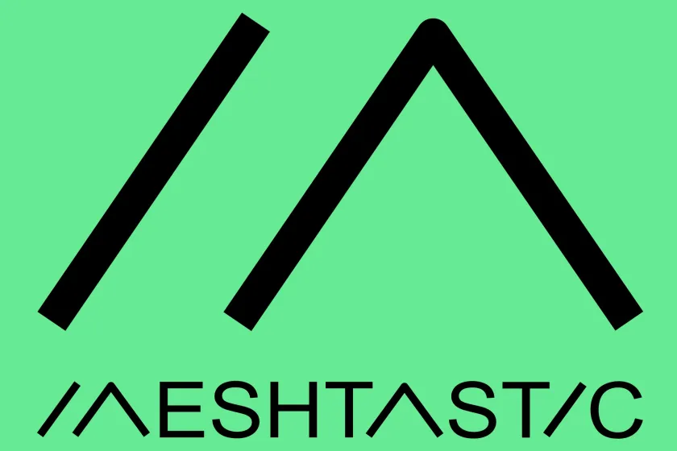
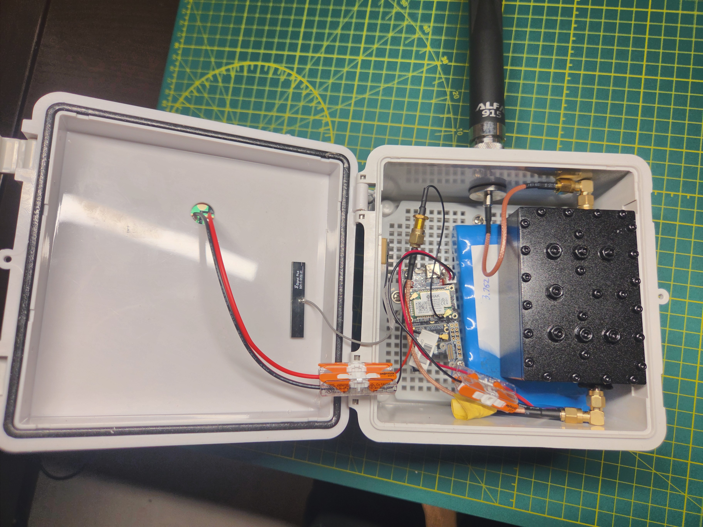
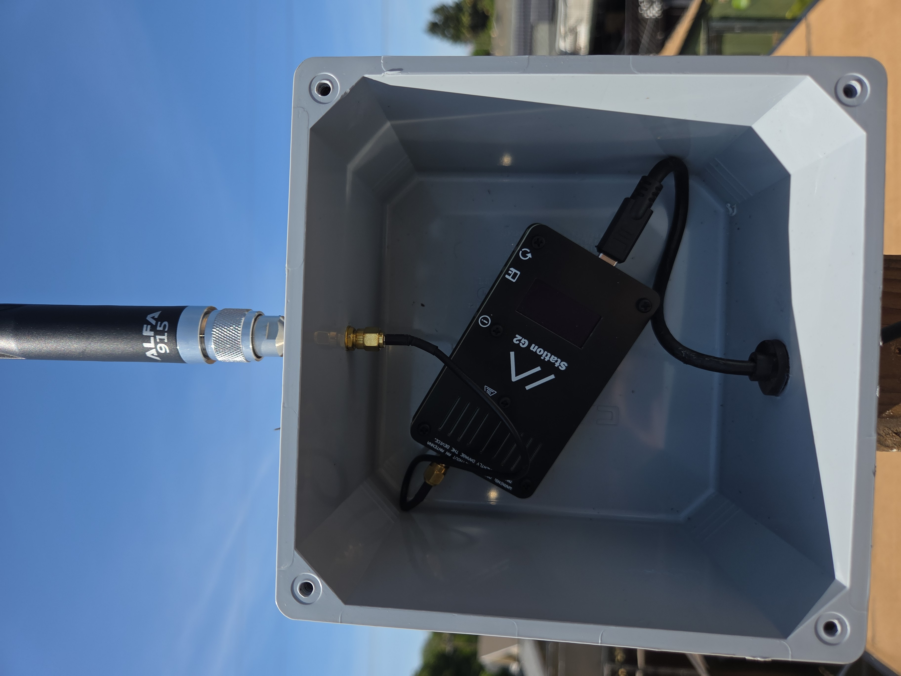

Meshstastic Radio Projects

Off-Grid, Secure Communications for Makers
Meshtastic provides secure, two-way text communication via an ad-hoc mesh network of LoRa
radio device. When paired with a phone or tablet, these devices allow users to communicate
without the use of internet or mobile phone service. Below are some of the devices that I have
built for secure communication in the event of a natural disaster, when traditional communications
like cell phones and the internet may become unreliable due to a surge in use. For more
information about Meshtastic please visit: https://www.meshtastic.org

This is a device I put together from various parts I found on and off the internet. For this
build I used:
- RAK Wisblock 4631 radio kit
- up-cycled 3.7v battery pack from an old router
- Baymesh 2 cavity filter
- Alfa 915MHz LoRa antenna
- 8"x 8" waterproof outdoor electrical enclosure with a door for easy access

The RAK Wisblock 4631 is a fine device, but it is somewhat underpowered at a mere 250mW.
For this build I opted for a device with a more powerful transmitter, in a durable and
waterproof enclosure. The materials used were as follows:
- Station G2 1W meshtastic node
- 10,000mAh battery bank
- standard right angle 915MHz LoRa antenna
- Apache 1800 waterproof carrying case

This was the first device I made using the Station G2 as a starting point. It is
permanently mounted on a pole on the roof of my house and serves as my base station node
I learned quite a bit from this build, albeit mostly "what NOT to do" for a Meshtastic build.
- Station G2 1W meshtastic node
- 20' PD-capable USB-C cable for power
- Alfa 915MHz LoRa antenna
- Baymesh 1 cavity filter (not pictured)
- Cantex 8" x 8" waterproof electrical enclosure